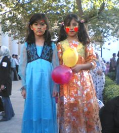
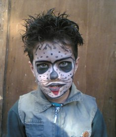

|
|

روز جهانی كودک و كمپين يک ميليون امضاء در سنندج / کاوه کرمانشاهی
پنج شنبه19 مهر 1386
پس از آنكه تلاشهايمان برای برگزاری مراسمی به مناسبت روز جهانی كودك در كرماشان بینتيجه ماند و درخواستمان برای كسب مجوز در پيچ و خم نامهبازیهای اداری گرفتار آمد از طريق دوستانمان باخبر شديم كه در سنندج برنامهای به همت فعالان حقوق كودك در گرامیداشت اين روز برپا خواهد شد. به دعوت موسسهی ههوراز سنندج برای شركت در اين برنامه به همراه دو تن از دوستان كمپينی راهی اين شهر میشويم. مسير دو ساعتهی كرماشان تا سنندج فرصت مناسبی است تا درباره مسائل كلی كمپين و فعاليتهايمان در كرماشان به گفتوگو بپردازيم و با انتقاد از كمكاری خود برای فعاليت بيشترمان برنامهريزی كنيم.
نيم ساعت پيش از شروع برنامه به محل برگزاری مراسم يعنی خانهی كُرد (امارتی قديمی متعلق به دوره قاجار كه زمانی محل زندگی يكی از خاندانهای بزرگ و مهم سنندجی به نام آصف بوده و امروز تبديل به موزه مردمشناسی شده) میرسيم. فلوريا محمدپور از برگزاركنندگان اين برنامه و عضو كمپين يك ميليون امضاء به استقبالمان میآيد و به داخل راهنمائیمان میكند. از دالانی كه در آن عكسها و پوسترهايی در پيوند با روز جهانی كودك به نمايش گذارده شده عبور میكنيم و وارد حياط بزرگ و زيبای امارت كه محل برپايی جشن روز جهانی كودك است میشويم.
 
چهرههای گريم شده عدهای از كودكان، بادکنکهای رنگارنگی كه در دست دارند و لباسهای زيبای كُردی كه تعدادیشان بر تن كردهاند شور و حالی ويژه به مراسم داده و البته حضور مادر و يا پدرانی كه همراه فرزندانشان در جشن حضور يافتهاند هم چشمگير است.
با ديدن جمعيت من و گلاله بدون اينكه از قبل برنامهای برای جمعآوری امضاء داشته باشيم تصميم میگيريم تعدادی امضاء جمع كنيم. من يك فرم و گلاله دو فرم جمعآوری امضاء همراهمان داريم، هر كدام به سمتی میرويم و خيلی زودتر از آنچه كه فكر كنيم با فرمهای پر از امضاء به هم میرسيم و هر دو ذوق زده از اينكه تنها در چند دقيقه توانستهايم هر سه برگه را پر كنيم و البته ناراحت به خاطر نداشتن برگهی سفيد برای جمعآوری دوباره امضاء. دوستی كه خود به دليل مورد بازداشتی كه هنگام جمعآوری امضاء در كرماشان برايش پيش آمده و مشكلات امنيتی كه هنوز دارد در جمعآوری امضاء همراهیمان نكرده ما را سرزنش میكند كه چرا قبل از جمعآوری امضاء از برگههای سفيد كپی نگرفتيم و ما هم با اين استدلال كه فكر نمیكرديم امضاء گرفتن در اين جمع تا اين حد مورد استقبال قرار گيرد كوتاهی خودمان را توجيه میكنيم.
گلاله پيشنهاد میكند پشت همين برگهها امضاء بگيريم و من میگويم بهتر است يك برگ سفيد را مانند فرمهای كمپين جدولبندی كنيم و از رويش تعدادی كپی بگيريم، ولی آن دوستمان معتقد است كه اين كارها هيچكدام فايدهای ندارد زيرا ارزش كار را پائين میآورد و از اعتماد مردم میكاهد و بهتر است ديگر بیخيال امضاء جمع كردن شويم. اما در همين گير و دار گلاله فكری به ذهنش میرسد. كافینت...
به سرعت از محل برنامه خارج میشويم و به اولين مغازه در نزديكی خانهی كُرد مراجعه میكنيم و آدرس نزديكترين كافینت را میپرسيم كه متأسفانه پاسخ میشنويم "در اين خيابان كافینت نداريم بايد به ميدان انقلاب برويد، شايد آنجا پيدا كنيد." خود را به ميدان انقلاب میرسانيم اما نشانی از كافینت نمیيابيم و باز در جستجو برای يافتن آدرس كافینت به چند عابر و مغازهدار مراجعه میكنيم و همه نشانی ميدان اقبال را میدهند. مسير كمی طولانیست و بايد تاكسی سوار شويم.
در ميدان اقبال موفق به يافتن كافینت میشويم و من فوراً پشت يك سيستم مینشينم و آدرس سايت كمپين را وارد میكنم و با ورود به بخش طرح يك ميليون امضاء و باز كردن صفحهای كه فرم برای جمعآوری امضاء در آن قرار دارد از مسئول كافینت میخواهم كه اين صفحه را برايم پرينت بگيرد. پس از گرفتن پرينت با عجله كافینت را ترك میكنيم و از يك دكهی مطبوعاتی چندين برگ كپی از روی فرم امضاء میگيريم و به خانهی كُرد يعنی همان محل برگزاری مراسم روز كودك باز میگرديم و دوباره شروع میكنيم به صحبت با مادران و پدران و گرفتن امضاء از آنها...
حضور چند مأمور نيروی انتظامی و تعدادی از افراد لباس شخصی كه نوع پوشش و آرايش چهرهشان نشان از مقام و مأموريتشان دارد باعث میشود كه در مراجعه به افراد و گفتوگو با ايشان كمی محتاطانهتر عمل كنيم. اما آنچه كه ما را در انجام فعاليتمان برای امضاء گرفتن در اين محيط كمك میكند نخست ناآشنا بودن چهرههايمان برای همان برادران لباس شخصیست كه در ميان جمعيت حضور دارند و دوم زمان كوتاهی كه به بحث با افراد برای امضاء گرفتن میگذرد به گونهای كه در بيشتر مراجعاتمان به مادران و يا پدران آنان به محض خواندن بيانيه و آگاهی از طرح كمپين با علاقه اقدام به امضاء میكردند و در كمتر موردی پيش آمد كه توضيح اضافی بخواهند يا به رسم معمول بحث را به مسائل دينی و فقهی بكشند و توجيه مذهبی برای تغيير قوانين بخواهند و يا با بیفايده دانستن اينگونه اقدامات اصلاحی به تلاوت آيهی ياس بپردازند و با گرفتن ژست مخالف راديكال عدم جسارتشان در امضاء كردن را توجيه نمايند.
گذشته از جمعآوری امضاء ما در اين مراسم موفق به ديدار چند تن از اعضا و فعالين كمپين شديم كه پيش از آن آشنايیمان با هم در حد شنيدن اسامی و يا خواندن مطالب و مصاحبههای يكديگر بود. نگين شيخالاسلامی از فعالان حقوق زنان و ژينا مدرسگرجی از اعضای كمپين در سنندج و پروين ذبيحی فعال كمپين در مريوان از جملهی اين افراد بودند كه در حين امضاء گرفتن با آنان برخورد كرديم و چقدر اينگونه آشنايی برای هر دو طرف جالب بود. در گفتوگو با يكديگر تصميم گرفتيم از اين پس ارتباطاتمان را بيشتر و قویتر كنيم و من از دوستان خواستم با ارسال مطلب و تهيه گزارش برای سايت گورين بو يهكسانی به پربارتر شدن سايت كردستان كمپين كمك كنند.
و مراسم روز جهانی كودك در حالی به پايان رسيد كه علاوه بر لطف حضور در اين جشن و آشنايی نزديك با دوستان كمپينی از ديگر شهرهای كُردنشين، من و گلاله توانستيم تعداد قابل توجهای امضاء جمع كنيم و اين برای هر دويمان بسيار خوشحال كننده بود.
پینوشت...
ـ روز بعد از مراسم ژينا مدرسگرجی تماس میگيرد و میگويد روناك صفازاده يكی از فعالان كمپين در سنندج را بازداشت كردهاند و میخواهد خبرش را در سايت گورين بو يهكسانی قرار دهم.
نمیخواستم اولين همكاری دوستان سنندجیمان با سايت كردستان كمپين با اين خبر آغاز شود...